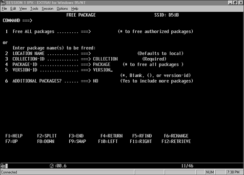

|
|
< Day Day Up > |
|
TSO (Time-Sharing Option)TSO, or Time-Sharing Option, is one of the five basic environments from which DB2 data can be accessed. TSO enables users to interact with the system using an online interface that is either screen- or panel-driven. The Interactive System Productivity Facility, or ISPF, provides the mechanism for communicating by panels, which is the common method for interaction between TSO applications and users. The TSO Attachment Facility provides access to DB2 resources in two ways:
TSO is one of the three online environments supported by DB2, but unlike the other two, TSO is not transaction-driven. The TSO Attachment Facility operates by means of a communication channel that uses a single thread to direct DB2 calls. Each user can be logged on, in the foreground, to a single TSO address space at any time. Each batch TSO job, however, initiates a different invocation of the TMP, enabling numerous batch TSO jobs submitted by the same user to run simultaneously. The batch jobs are independent of any foreground TSO activity. Thus, a single user, at any given time, can have one online TSO session communicating with DB2 and multiple batch TSO jobs communicating with DB2. The TSO Attachment Facility is available for use by simply installing DB2. Communication between DB2 and TSO is accomplished with the DSN command processor, which is bundled with DB2. The DSN command processor enables users to issue DB2 commands in the TSO environment. One of these commands, the RUN command, executes DB2 application programs. (IBM bundles an online TSO application that can be used to access DB2 data: DB2 Interactive, or DB2I. DB2I is discussed in greater depth later in this section.) As you can see in Figure 18.2, the DSN command processor establishes the thread that enables TSO to communicate with DB2. An alternative method is to use the Call Attach Facility in TSO to communicate with DB2. The Call Attach Facility is discussed later in the "CAF (Call Attach Facility)" section of this chapter. Figure 18.2. Using the TSO Attach Facility.TSO/DB2 ParametersDB2 is a parameter-driven subsystem. A series of parameters known as DSNZPARMs, or simply ZPARMs, is passed to DB2 when it is started. A complete discussion of the DSNZPARMs is supplied in Chapter 28, "Tuning DB2's Components." Because two of these parameters—IDFORE and IDBACK—apply directly to TSO, however, I will discuss them here. IDFORE controls the number of users that can access DB2 simultaneously from the TSO foreground. The types of TSO foreground users include the following:
DB2 limits the number of TSO foreground tasks to the number specified in the IDFORE parameter. When the limit is reached, any subsequent request for additional foreground TSO tasks is rejected. IDBACK controls the number of concurrent DB2 batch connections. These connections, however, are not limited to TSO batch connections. They include the following:
DB2 Access Using Batch TSODB2 batch programs are executed in the background under the control of the TSO terminal monitor program. A TSO session is thereby created in batch. The DSN command is invoked by this session through input specified in the SYSTSIN data set. See Listing 18.1 for JCL to run a batch TSO/DB2 program. Listing 18.1. Batch JCL for a TSO/DB2 Program
//DB2JOBB JOB (BATCH),'DB2 BATCH',MSGCLASS=X,CLASS=X,
// NOTIFY=USER
//*
//***************************************************************
//*
//* JCL TO RUN A DB2 PROGRAM IN BATCH
//* USING THE TSO TERMINAL MONITOR PROGRAM
//*
//***************************************************************
//*
//JOBLIB DD DSN=SYS1.DB2V810.DSNLOAD,DISP=SHR
//BATCHPRG EXEC PGM=IKJEFT01,DYNAMNBR=20
//SYSTSPRT DD SYSOUT=*
//SYSPRINT DD SYSOUT=*
//SYSUDUMP DD SYSOUT=*
//SYSTSIN DD *
DSN SYSTEM(DB2P)
RUN PROGRAM(PROG0001) -
PLAN(PLAN0001) -
LIB('APPL.LOAD.LIBRARY')
END
/*
//
This JCL invokes TSO in batch, reads the SYSTSIN input, and invokes the DSN command processor for the DB2P subsystem. Next, it runs the program named PROG0001 using the plan PLAN0001. When the program is complete, the DSN session ends. DB2 Access Using Foreground TSOAnother way to access DB2 data is through online, or foreground, TSO using the DSN command processor. You simply issue the following command from either ISPF option 6 or the TSO READY prompt:
DSN SYSTEM(xxxx)
Here, xxxx represents the DB2 subsystem name. This command places you under the control of DSN. A prompt labeled DSN appears, indicating that you are in the middle of a DSN session. You can issue any DSN subcommand, including the RUN subcommand. The DSN command processor and its associated subcommands are discussed more fully in Chapter 36, "DB2 Commands." Suppose that you want to run a DB2 program called SAMPLE2 using the plan SAM2PLAN in foreground TSO. To do so, you can issue the following commands: READY DSN SYSTEM(DB2T) DSN RUN PROGRAM(SAMPLE2) PLAN(SAM2PLAN) DSN END READY The boldface words are entered by the user. The other words are system prompts returned by TSO or the DSN command processor. Rather than using the DSN command directly from a terminal, as just discussed, embedding the execution of a DB2 program in a CLIST or REXX EXEC is more common. A TSO user can invoke the CLIST or EXEC either directly by entering its name from ISPF option 6 or the TSO READY prompt, or as a selection from an ISPF panel. Figure 18.3 shows a common configuration for an online, TSO, ISPF-driven DB2 application. Figure 18.3. A typical ISPF online DB2 application.Online TSO/DB2 Design TechniquesProgrammers can follow two basic scenarios for developing online TSO programs that access DB2 data. Each scenario provides a different level of runtime efficiency and support for application development. These two scenarios provide either fast application development or efficient performance. Using the fast application development scenario enables programmers to make full use of the development tools provided by TSO and ISPF. The normal processing flow for this scenario is a seven-step process
This scenario provides maximum programming flexibility using minimum system resources. It has two drawbacks, however. Each time the user selects a menu option, a large amount of overhead is involved to load and run the CLIST, invoke DSN, issue the RUN command, load the program module, and create the thread. Also, each menu option consists of a single load module and plan. This scenario effectively eliminates the capability to switch from program to program using ISPLINK because one program and its associated plan accomplish one task. The scenario to process a TSO application achieving efficient performance is a nine-step process:
When you develop applications using this scenario, overhead is reduced significantly. The CLIST is loaded and executed only once, DSN is invoked only once, the program modules are loaded only once, and a single thread is established once and used for the duration of the user's stay in the application. This scenario has some drawbacks, however. The application can contain one potentially very large program load module. Each time a program is modified, the entire module must be link-edited again. This process uses a lot of CPU time. Also, application downtime is required because the application must wait for the link-edit process to complete. In addition, more virtual storage is required to store the program load module as it executes. Additionally, you must take extra care when determining how to bind the application. For applications developed on older releases of DB2 (prior to V2.3), a single large plan may exist that consists of every DBRM in the application. This used to be required by DB2. This scenario causes the same types of problems as a large program load module:
The better application design option is for each program DBRM to be bound to a single package. All the packages are then included in the package list of a plan (either explicitly or using wildcards). This scenario reduces bind time, thereby decreasing CPU time and application downtime waiting for the bind to complete. A final drawback to this scenario is that when the DSN command is used to run online TSO programs, the thread is created when the first SQL call is made. When the program is composed of many programs that call one another, a thread can be tied up for an inordinate amount of time. When the application is invoked, the DSN command is issued, specifying the online application's load module and the composite plan. The thread created for this program's execution remains active until the program ends. One thread is used for each user of the TSO/DB2 application for the duration of its execution. TSO is not a transaction-driven system. Users can enter a TSO application and leave a terminal inactive in the middle of the application, thus tying up a DB2 thread. That thread is not necessary when the user is thinking about what to do next or has walked away from the terminal. An alternative solution is to use the Call Attach Facility to control the activation and deactivation of threads. This technique is addressed in the upcoming section on CAF. DB2I and SPUFIDB2I is a TSO-based DB2 application. It consists of a series of ISPF panels, programs, and CLISTs enabling rapid access to DB2 services and data. Using DB2I can increase the TSO DB2 developer's productivity. DB2I provides many features that can be exploited by the TSO user to query and administer DB2 data. To access DB2I, follow this sequence:
After you select the DB2I option, the main menu appears, as shown in Figure 18.4. This figure shows all DB2I features, including those used for program preparation and execution, as discussed in Chapter 13, "Program Preparation." Each DB2I option is discussed in the following sections. Figure 18.4. The DB2I menu.SPUFI OptionThe first option in the DB2I main menu is SPUFI, or SQL Processor Using File Input. It reads SQL statements contained as text in a sequential file, processes those statements, and places you in an ISPF browse session to view the results. Figure 18.5 shows the SPUFI panel. Figure 18.5. The DB2I SPUFI panel.By specifying an input and output data set and selecting the appropriate options, you can execute SQL statements in an online mode. The SPUFI options follow:
Specifying Y for all these options except Change Defaults is common. Typically, defaults are changed only once—the first time someone uses SPUFI. ISPF saves the defaults entered from session to session. Use these options—as you see fit—to control your SPUFI executions. The defaults panel is shown in Figure 18.6. Figure 18.6. The DB2I SPUFI Defaults panel.The SPUFI input data set can contain multiple SQL statements, as long as they are separated by semicolons. For example, you could successfully code the following statements in a SPUFI input data set: -- -- THIS SQL STATEMENT WILL SELECT ALL ROWS OF THE -- SAMPLE TABLE, DSN8810.DEPT SELECT * FROM DSN8810.DEPT; -- -- THIS SQL STATEMENT WILL SET THE SALARY FOR ALL EMPLOYEES -- WITH THE LAST NAME OF 'KWAN' TO ZERO UPDATE DSN8810.EMP SET SALARY = 0 WHERE LASTNAME = 'KWAN'; -- -- THIS SQL STATEMENT WILL ROLL BACK THE CHANGES MADE BY -- THE PREVIOUS SQL STATEMENT ROLLBACK; This sample input for the SPUFI processor contains three SQL statements. Each SQL statement is separated from the others by the semicolon that terminates each statement. Comments are preceded by two hyphens. When the SQL is executed and browsed, an output data set like the following appears: --------+--------+--------+--------+--------+--------+- -- THIS SQL STATEMENT WILL SELECT ALL ROWS OF THE -- SAMPLE TABLE, DSN8810.DEPT SELECT * FROM DSN8810.DEPT; --------+--------+--------+--------+--------+--------+- DEPTNO DEPTNAME MGRNO ADMRDEPT --------+--------+--------+--------+--------+--------+- A00 SPIFFY COMPUTER SERVICE DIV. 000010 A00 B01 PLANNING 000020 A00 C01 INFORMATION CENTER 000030 A00 D01 DEVELOPMENT CENTER ------- A00 E01 SUPPORT SERVICES 000050 A00 D11 MANUFACTURING SYSTEMS 000060 D01 D21 ADMINISTRATION SYSTEMS 000070 D01 E11 OPERATIONS 000090 E01 E21 SOFTWARE SUPPORT 000010 E01 DSNE610I NUMBER OF ROWS DISPLAYED IS 9 DSNE616I STATEMENT EXECUTION WAS SUCCESSFUL, SQLCODE IS 100 --------+--------+--------+--------+--------+--------+- -- --THIS SQL STATEMENT WILL SET THE SALARY FOR ALL EMPLOYEES --WITH THE LAST NAME OF 'KWAN' TO ZERO UPDATE DSN8810.EMP SET SALARY = 0 WHERE LASTNAME = 'KWAN'; --------+--------+--------+--------+--------+--------+- DSNE615I NUMBER OF ROWS AFFECTED IS 1 DSNE616I STATEMENT EXECUTION WAS SUCCESSFUL, SQLCODE IS 0 --------+--------+--------+--------+--------+--------+- -- -- THIS SQL STATEMENT WILL ROLL BACK THE CHANGES MADE BY -- THE PREVIOUS SQL STATEMENT ROLLBACK; --------+--------+--------+--------+--------+--------+- DSNE616I STATEMENT EXECUTION WAS SUCCESSFUL, SQLCODE IS 0 --------+--------+--------+--------+--------+--------+- DSNE617I COMMIT PERFORMED, SQLCODE IS 0 DSNE616I STATEMENT EXECUTION WAS SUCCESSFUL, SQLCODE IS 0 --------+--------+--------+--------+--------+--------+- DSNE601I SQL STATEMENTS ASSUMED TO BE BETWEEN COLUMNS 1 AND 72 DSNE620I NUMBER OF SQL STATEMENTS PROCESSED IS 3 DSNE621I NUMBER OF INPUT RECORDS READ IS 17 DSNE622I NUMBER OF OUTPUT RECORDS WRITTEN IS 48 The data set used for input of SQL must be allocated before invoking SPUFI. The data set can be empty and can be edited as part of the SPUFI session. It is recommended that each SPUFI user maintain a partitioned data set containing his or her SPUFI input. This way, users can keep and reference frequently used SQL statements. The SPUFI input data set should be defined as a fixed, blocked data set with an LRECL of 80. You can write SQL statements in all but the last 8 bytes of each input record; this area is reserved for sequence numbers. You do not need to allocate the output data set before using SPUFI. If the output data set does not exist, SPUFI creates a virtual, blocked sequential data set with an LRECL of 4092. Set the proper SPUFI defaults (see Figure 18.6). You can set these defaults the first time you use SPUFI and then bypass them on subsequent SPUFI runs. Be sure to specify the following defaults:
The other default values are appropriate for most situations. DCLGEN OptionThe DCLGEN option in the DB2I main menu automatically produces a data set containing a DECLARE TABLE statement and valid WORKING-STORAGE host variables for a given DB2 table. You can include the data set in a COBOL program to enable embedded SQL access. See Chapter 13 for more details on DCLGEN. Program Preparation OptionThe Program Preparation option in the DB2I main menu prepares a program containing embedded SQL for execution. See Chapter 13 for more details on DB2 program preparation. Precompile OptionPrecompile is the fourth option on the DB2I main menu. In precompilation, a program containing embedded SQL is parsed to retrieve all SQL and replace it with calls to a runtime interface to DB2. See Chapter 13 for more details on precompiling a DB2 program. Bind/Rebind/Free OptionWhen you select Option 5 of the DB2I menu, the Bind/Rebind/Free menu shown in Figure 18.7 appears. Figure 18.7. The DB2I Bind/Rebind/Free menu.Option 1 on this menu provides the capability to bind a DB2 plan, and option 4 binds a package. These options are discussed fully in Chapter 13. The second option is Rebind Plan. When you choose this option, the panel in Figure 18.8 appears. A plan can be rebound, thereby rechecking syntax, reestablishing access paths, and in general, redoing the bind. However, rebind does not enable you to add a DBRM to the plan. In addition, if any of the rebind parameters are not specified, they default to the options specified at bind time, not to the traditional bind defaults. Rebind is particularly useful for determining new access paths after running the RUNSTATS utility. Figure 18.8. The DB2I Rebind Plan panel.Option 5 provides the capability to rebind a package. You rebind packages in much the same way you rebind plans. Figure 18.9 shows the Rebind Package panel. Figure 18.9. The DB2I Rebind Package panel.There is a significant amount of confusion about the difference between the REBIND command and the BIND REPLACE command. A REBIND simply reevaluates access paths for the DBRMs currently in a plan (or the single DBRM in a package). BIND REPLACE, on the other hand, replaces all the DBRMs in the plan. So, if you must use a different DBRM, BIND REPLACE is your only option. If you must simply change access path selections based on current statistics, REBIND will do the trick. On the Bind/Rebind/Free menu, Option 3, Free Plan, and Option 6, Free Package, enable you to remove plans and packages from the system. Figure 18.10 shows the Free Plan panel, and Figure 18.11 shows the Free Package panel. You simply specify the names of the plans or packages to remove from the system, and they are freed. Figure 18.10. The DB2I Free Plan panel.Figure 18.11. The DB2I Free Package panel.Packages and plans you no longer use should be freed from the DB2 subsystem. Doing so frees DB2 Directory and DB2 Catalog pages for use by other packages and plans. CAUTION Avoid issuing the FREE (*) command. This command drops every plan in the DB2 subsystem, which is probably not your intention. Additionally, a large amount of resources is used to execute this command. Run OptionThe sixth DB2I option enables you to run a DB2 application program. The Run option is rarely used. More often, foreground DB2 programs are invoked by CLISTs, REXX EXECs, or ISPF panels, and background DB2 programs are invoked through preexisting batch JCL. When you select this option, the Run panel appears, as shown in Figure 18.12. You simply specify the load library data set (including the member name) for the program to be run, along with any necessary parameters, the appropriate plan name, and a WHERE TO RUN option. The three WHERE TO RUN options follow: Figure 18.12. The DB2I Run panel.
DB2 Commands OptionWhen you select DB2I option 7, DB2 Commands, the panel in Figure 18.13 appears, enabling you to submit DB2 commands using TSO. For example, the command shown in Figure 18.12 displays the status of adatabase. In-depth coverage of DB2 commands is included in Part VI. Figure 18.13. The DB2I Commands panel.Utilities OptionDB2I also provides panels that ease the administrative burdens of DB2 utility processing. Using option 8 of DB2I, the Utilities option, you can generate utility JCL, submit the utility JCL, display the status of utilities, and terminate utilities using a panel-driven interface. For a complete discussion of the DB2 utilities and the use of DB2I to control DB2 utility processing, consult Part VI. DB2I Defaults OptionThe defaults panel, DB2I option D, lets you modify parameters that control the operation of DB2I (see Figure 18.14). Be sure that the proper DB2 subsystem is specified in the DB2 Name parameter. If your production DB2 subsystem runs on the same central electronic complex as your test DB2 subsystem, disaster can result if the name is not coded properly. Be sure also that you supply the proper language to be used for preparing DB2 programs in the Application Language parameter and a valid job card for your shop in the DB2I Job Statement parameter. A second default panel (such as the one shown in Figure 18.15) can be displayed for language defaults based on the Application Language chosen. Figure 18.14. The DB2I Defaults panel.Figure 18.15. The DB2I Defaults panel #2: COBOL Defaults.QMFIBM's Query Management Facility, or QMF, is an interactive query tool used to produce formatted query output. QMF enables you to submit SQL queries dynamically, much like DB2I's SPUFI facility. QMF goes much further, however. Using a mechanism called a QMF form, you can format the results of your SQL queries into professional-looking reports. To depict the basics of QMF, assume that you must produce a formatted report of all employees in the company. You invoke QMF, generally by choosing an option from the ISPF main menu. The QMF Home panel then appears, as shown in Figure 18.16. Notice the numbered options along the bottom portion of the screen. These numbers correspond to QMF functions that you can invoke by pressing the function key for the number indicated. For example, press F1 to request the first function, Help. Figure 18.16. The QMF Home panel.You can use three basic QMF objects to produce formatted reports of DB2 data: queries, forms, and procs. You begin by creating a query. Press F6 to navigate to the QMF Query panel, which is initially blank. You will produce an employee report, so type the following statement at the COMMAND prompt:
COMMAND ===> DRAW SYSIBM.SYSPLAN
The panel shown in Figure 18.17 then appears. Figure 18.17. The QMF Query panel.To run this query, press F2. Doing so produces the report shown in Figure 18.18. You can print this report using F4 or format it using F9. When you press F9, the report form appears, as shown in Figure 18.19. A default form is generated for each query when it is run. Figure 18.18. The QMF Report panel.Figure 18.19. The QMF Form panel.You can use a QMF Form to produce a formatted report for the query output. QMF Forms enable you to perform the following:
You can see how QMF gives you a great deal of power for creating quick, formatted reports from simple SQL queries. The third QMF object, the QMF Proc, is another important feature of QMF. A QMF query can contain only one SQL statement. Contrast this capability with SPUFI, which can contain multiple SQL statements as long as they are separated by a semicolon. To execute multiple SQL statements at one time, you use a QMF Proc. QMF Procs contain QMF commands that are tied together and executed serially. For an example, see Figure 18.20. This QMF Proc runs one query, prints the results, and then runs another query and prints its results. You can string together as many run statements as necessary and store them as a QMF Proc. Figure 18.20. The QMF Proc panel.Using QMF is a quick way to produce high-quality professional reports. Following is a typical QMF user's session, shown also in Figure 18.21. If you type a single SQL statement and press a few function keys, an end-user report is generated.
Figure 18.21. A typical QMF session.Other TSO-Based DB2 ToolsA host of vendor-supplied tools use TSO as their execution environment. In addition to QMF, IBM provides other tools with a TSO interface such as DB2-PM. Additionally, most of the third-party tools for DB2 database administration, analysis, and development are TSO-based. A comprehensive list of DB2 tool vendors is provided in Appendix B, "DB2 Tool Vendors," and coverage of the types of tools available is provided in Chapter 39, "Components of a Total DB2 Solution." TSO GuidelinesWhen utilizing DB2 in conjunction with TSO, the following guidelines should be used to ensure effective usage of DB2 and TSO. Create MVS Performance Groups for DB2 UsersTo ensure fast TSO response time, create separate MVS performance groups for TSO users who will access DB2 applications. TSO is generally associated with three periods, designated here as period1, period2, and period3. These periods dictate the amount of MVS resources assigned to a TSO user. Period1 provides more resources than period2, which in turn provides more resources than period3. As TSO users run DB2 applications, their address space is moved from an initial period to lower periods as resources are used. As the address space is moved lower, the TSO response time becomes slower. For DB2 and QMF users, you can create TSO performance groups with higher levels of resources in period1 and period2. Also, you can prevent the lowering of their TSO sessions to period3. This way, you can provide an optimal environment for high-priority TSO/DB2 applications. Integrate All Resources into the DB2 Unit of Work When Using TSOWhen COMMIT processing is performed in online, TSO-based applications, DB2 controls the committing of its resources. The commit and recovery of any other resources, such as sequential input and output files, must be controlled through a program. This is in contrast to the other online environments, which control commit processing by commands native to the environment. COMMIT processing in batch TSO/DB2 programs should follow the guidelines presented in Part II. COMMIT Frequently in TSO/DB2 ApplicationsOnline TSO/DB2 applications are subject to more frequent deadlocks and timeouts than DB2 applications using other transaction-oriented online environments. For this reason, you should commit more frequently in an online TSO/DB2 application than in DB2 applications running in other environments. Consider committing updates every row or two, rather than after a full screen. Committing might affect the efficiency of the application and should be handled on a program-by-program basis. Failure to commit frequently, however, can result in an unusable application because of lock contention. Use ISPF Panels to Validate Screen InputTo perform validation checking, use the native functionality of ISPF rather than code validation routines. When ISPF performs the checking, the data is validated before it is processed by the application. This approach can reduce the overhead of loading the program and allocating the thread and other overhead related to program execution. In addition, error checking is handled by the ISPF routines rather than by the application code. Code provided by the system is generally more error free than functionally equivalent application code. Finally, if you use the validation facilities of ISPF, you can greatly reduce the time it takes to develop TSO/DB2 applications. Avoid TSO in Performance-Critical ApplicationsAs a development platform for DB2-based applications, TSO is limited in its functionality and efficiency. You should follow these basic rules when deciding whether to use TSO as your online monitor. Do not choose TSO as the development platform for an online DB2-based application if you need subsecond response time or if more than 10 users will be accessing the application concurrently. However, you should choose TSO if you need an environment that speeds up the application development cycle. TSO provides a rich set of tools for developing and testing programs and ISPF screens. Use ISPF TablesConsider copying a DB2 table that must be browsed to an ISPF table at the beginning of the program and processing from the ISPF table instead of the DB2 table. This way, you can dramatically increase performance when an online TSO/DB2 program must continually reopen a cursor with an ORDER BY due to COMMIT processing. Instead, the ISPF table can be created from a cursor, sorted appropriately, and COMMIT processing will not cause the program to lose cursor positioning on the ISPF table. However, you must consider the update implications of using an ISPF table when programming and executing programs using this technique. Updates made to the DB2 table by other users are not made to the ISPF table because it is a copy of the DB2 table for your program's use only. These updates can cause two problems. One, updates made by other programs might be bypassed rather than processed by the program using the ISPF table. For example, if another program updates data and an ISPF table-driven program generates reports, the report might not contain the most current data. Another potential problem is that the program using the ISPF table might make incorrect updates. For example, if the program reads the ISPF table and then updates the DB2 table, the following scenario could result:
At time 1, Program 1 begins executing. It copies the EMP table to the ISPF table before Program 2 begins. At time 3, Program 2 begins executing, serially processing employees and adding 100 to each employee's bonus. After Program 1 copies the entire EMP table, it begins giving all employees in department B01 a 10-percent raise in their bonus. You can see how the employees in department B01 will be disappointed when their bonus paycheck arrives. Program 2 adds 100, but Program 1, unaware of the additional 100, adds 10 percent to the old bonus amount. Consider employee 000020, who works in department B01. He starts with a bonus of $800. Program 2 adds 100, making his bonus $900. Then Program 1 processes employee 000020, setting his bonus to 800 x 1.10, or $880. Instead of a $990 bonus, he receives only $880. Avoid Running Batch Programs in TSO ForegroundA DB2 program developed to run as a batch program (that is, with no user interaction while the program is running) can be run in the TSO foreground using the DSN command processor, but doing so is not recommended. Running a DB2 batch program in this manner needlessly ties up a user's TSO session and, more important, consumes a valuable foreground thread that could be used for true online processing. (Remember that the IDFORE DSNZPARM value limits the number of foreground threads available for use.) Use IKJEFT1BYou must use the TSO Terminal Monitor Program (TMP) to invoke the DSN command and run a DB2 application program in batch mode. The generic program name is IKJEFT01. However, system errors and user abends are not honored by IKJEFT01, making it difficult to perform error checking in subsequent JCL steps. To rectify this problem, you can use IKJEFT1B instead of IKJEFT01. IKJEFT1B is an alternate entry point to the TSO TMP. If an ABEND occurs and you are using IKJEFT01, the result will be a dump of TSO and the ABEND code will not be passed to the next step of your job. This is probably not the results you are looking for. The use of IKJEFT1B will give the same results as a standard MVS batch job because IKJEFT1B passes non-zero return codes through to JES where they can be checked in the JCL job stream. |
|
|
< Day Day Up > |
|